Professional Experience
Psyche Soldier VR
Tools Used: Unity, Blender, GIMP, Audacity
Language: C#
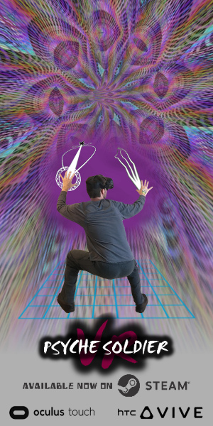
Single Step Games' Psyche Soldier VR is a challenging, truly dynamic, duck-and-dodge shooting gallery game that takes place in the player's subconscious.
Players cast light energy to battle against the shadow aspects of their psyche in seven different themed missions: Agency, Attachment, Fear, Procrastination, Shame, Stress, and Perfection.
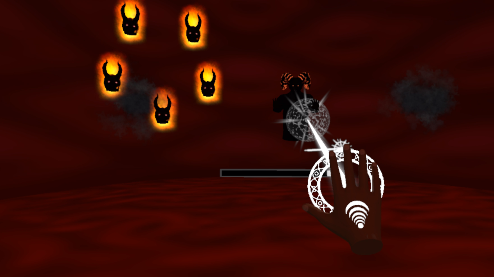
I founded Single Step Games, and designed, developed, and produced Psyche Soldier VR for HTC Vive and Oculus Touch. As the principal developer, I created the design,
programmed the gameplay, AI, and systems, fabricated sound effects and particle effects, created the UI, wrote and recorded voice overs, curated the music, implemented character assets,
made some animations, and created the environment art. I also had to communicate with some outsourced asset creators to fix some VR specific issues, as well as handle the various business necessities.
Epic Mickey 2: The Power of Two
Tools Used: Gamebryo's Scene Designer, Perforce (P4V)
Language: Lua
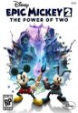
Disney's Epic Mickey 2: The Power of Two is an action-adventure platforming game
where Mickey Mouse joins up with Oswald the Lucky Rabbit on an epic journey to stop an unknown enemy from destroying Wasteland.
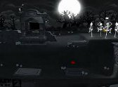
While at Disney Interactive's Junction Point Studio, I was a technical designer responsible for improving and validating tools,
providing technical support to the content designers, and scripting and maintaining several prefabs and systems,
such as the multi-track 2D system, one-way collision prefab, and AI navigation prefabs. I also inherited all of the outsourced 2D levels
to fix and polish into a publishable product, and fixed some of the game's trickier content bugs in the 3D levels.
DC Universe Online
Tools Used: Unreal Editor 3 (proprietary modified version), Perforce (P4V)
Language: Kismet (proprietary modified version, visual scripting)
Sony's DC Universe Online is a fast-paced action MMO where DC Comic's superheroes and supervillians,
such as Batman, Superman, Lex Luthor, and Joker, fight for the future of their universe in hand-to-hand combat.
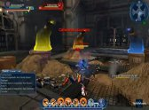
As a content designer at Sony Online Entertainment in Austin, I was responsible for encounter design,
NPC and ability creation, AI strategy creation, and recording and implementing temporary voice overs.
I worked on creating instanced "dungeon" areas, cinematic scenes, and outdoor quest zones. As my skills quickly progressed,
I began making several mini-boss fights and was given the honor of making the Catwoman boss fight,
which was the central feature of the game's first live patch! I also picked up several outdoor and interior content zones
and brought them from a beta state to a fun and polished publishable state.
Cubis Creatures
Tool Used: Proprietary
Cubis Creatures is an entertaining and addictive puzzle game where players shoot blocks to match colors within a time limit,
aiming to break the "star" blocks and awaken the creatures from their magic-induced slumber.
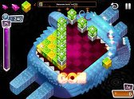
As a contractor for Fresh Games, I was a level designer responsible for the creation of 30 puzzle levels.
I designed the layouts on paper, implemented them in the game's level editor, adjusted the "block queues" for type, color, and weighting,
and then play tested and refined the levels until they were enjoyable and challenging!
Pinwheel Puzzler
Tool Used: Apple's XCode
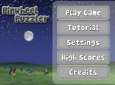
Pinwheel Puzzler is a color and spatial recognition puzzle game where players rotate pinwheel squares
to match the target pattern, so Sunny, the main character, can clear up the weather and bring warmth to the land.
The game features unique swipes, rubs, and flips of the iPhone to remove weather related hazards such as rain,
frost, and wind-blown leaves.
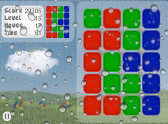
I founded Whirled World Studios, and designed and produced Pinwheel Puzzler.
As producer, I collaborated with a programmer and an artist to develop the game throughout production,
and handled the legal aspects of the business. As designer, I designed the game mechanics,
game modes, 50 puzzle levels, the story, UI, and reward systems.
Austin Community College awarded me 1st Place in a design competition for the game!
Heatwave Interactive
Tools Used: Unity, Perforce (P4V)
Language: C#
Heatwave Interactive is an entertainment software studio focusing on creating high quality
intellectual properties that are designed from day one for cross-media tie-ins and online connectivity.
While at Heatwave Interactive, I was a design intern responsible for the research and
report of potential competitor products, designing game mechanics and systems, and further developing
three existing intellectual properties. I began programming a digital prototype for one of those IPs,
but the project has not been made public.
Hobbyist Development
Call of Duty: World At War - Nazi Zombies
Tool Used: Radiant
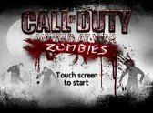
Call of Duty: World At War introduced a new game mode called "Nazi Zombies," where players were surrounded by slow moving zombies.
The zombies moved progressivley faster and in larger numbers, challenging the players to survive as many rounds as they could.
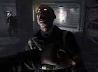
As a fan of long-range sniping in Call of Duty, I noticed the stock zombie map was in a very tight space,
making the sniper rifle in the level pretty useless. I decided to make the zombie map, Sniper's Bridge, as a survival skillshot
level with wide-open spaces for sniping, while maintaining the claustrophobic feel of enemies collapsing in from all around.
The level included alternative weapons such as a rifle, a shotgun, and even a hidden flamethrower!
I also modified the wooden planks prefab that normally covers the windows, changing it into broken fence
pieces to better fit the aesthetics of the level.
Gears of War
Tool Used: Unreal Editor 3
Language: Kismet (visual scripting)
Gears of War is a popular third-person shooter that features pop-n-stop gameplay, futuristic military style weapons,
and rippingly grusome chainsaw melee attacks.
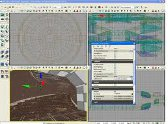
As game design students, we were challenged to create a Gears of War level that used randomly picked songs
from Guns N'Roses "Use Your Illusion" albums to influence the level's design. Unfortunately, I got the song "Yesterday's",
which did not fit the action-packed style of the game. Consequently, I decided to take it in an artistic direction
that would allow me to learn in-game cinematics, since I was already comfortable with the basics of map creation.
Neverwinter Nights
Tool Used: Aurora
Language: NWScript (similar to C and Java)
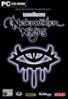
Neverwinter Nights is a Dungeons & Dragons style third-person, fantasy role-playing
game where mages, priests, rogues, and others set out to find the four creatures needed to cure the Wailing Death plague.
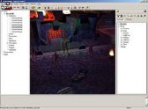
In my game scripting class, we were given the opportunity to create any type of epic quest we desired.
My team of three decided to create Monty Python and the Holy Grail as our epic questline.
I researched the movie for some interesting and memorable scenarios to bring into the game. My teammates
and I each selected our favorite scenes to build. I selected the Holy Hand Grenade of Antioch,
and focused on scripting Tim the Enchanter, casting fire spells around the mountains and the priests walking
around a winding path, chanting. The player had to talk to the priests, receive the Holy Hand Grenade,
and then use it on the Killer Rabbit of Caerbannog to progress to the next section. Unfortunately,
the game files were eaten by the Legendary Black Beast of Aaaaarrrrrrggghhh, so the video below is
just a clip from the movie.
Call of Duty 4
Tool Used: Radiant
Call of Duty 4 is one of my all time favorite shooter games! The single-player campaign
is impressive and dynamic, and the multi-player is amazing and addictive.
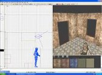
Having played Call of Duty 4 multi-player through all ten ranks of prestige,
I knew exactly what kind of map I wanted to make when I decided to teach myself game design.
I wanted to juxtapose a long-range mostly open space alongside a narrow passageway with tight corners and dark spaces.
The resulting map, Tree Top Lab, was a tree covered hillside with a hidden underground bunker.
I added several buildings and obstacles to create maximum sniping distance without affecting performance,
placed numerous obstacles in the interiors with specifically placed lighting, and time-tested running distances
to ensure that both teams' sides of the map were balanced for each of the multi-player game modes.
Ranch Rush
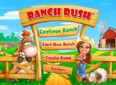
Ranch Rush is a time management farming game where the main character, Sara, is on a mission to
reinvigorate her father's farm and save it from the bank.
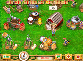
As a volunteer for Fresh Games, a premium casual games publisher, I tested Ranch Rush to analyze
the design's entertainment value and playability, as well as functional quality, and wrote a design analysis
documenting my findings for them.
Early Years Development
Snake and Towers of Hanoi
Language: True Basic
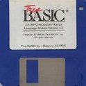
True Basic is a variant of the Basic programming language that implemented global and local variables for
recursion functions and subroutines. It also featured a pixel canvas for graphics primitives and "blitting,"
making it preferable for video game creation.
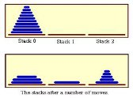
In my high school programming class, our second semester project was to program a video game.
I decided to program the classic game Snake, which turned out to be an enjoyable learning experience.
I coded, fixed bugs, and polished until the game was complete, finishing early enough to work on another project!
For my extra project, I chose another classic game, Towers of Hanoi, which I managed to
program and refine before the semesters end.
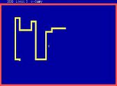
TI-83 Games
Language: TI-BASIC
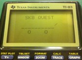
TI-BASIC is a limited, high-level programming language used on Texas Instruments' graphing calculators.
It uses simple operations and complex mathematical computation to plot and draw on the graph screen.
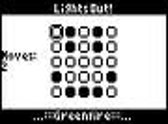
Throughout high school, I programmed dozens of different games on my TI-83 calculator.
Building upon my fundamental understanding of programming basics, I experimented with the
calculator's functions and taught myself how to recreate many of my favorite computer games from childhood.
Some of the games I programmed included: Lights Out, Simon, Connect Four, Tic-Tac-Toe, Castle Adventure, Sk8 Quest, and others.
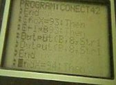
Number Munchers
Language: Basic
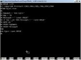
Number Munchers is an educational video game where players moved a Muncher character around a grid,
selecting grid values that matched the level's numerical expression while avoiding the enemy Troggles.
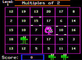
In elementary school, as a math nerd, I was absolutely thrilled by the game Number Munchers!
I loved it so much, I begged my parents to buy it for me. Unfortunately, we did not have an Apple computer,
so my dad offered to program the game on our PC, if I was willing to program it with him.
Every Saturday for a couple months, he taught me what he was doing and why, while he programmed a simplistic
version of the game. Dad's early instructions formed the way I think about games and programming,
and I am greatful to have gained that knowledge.
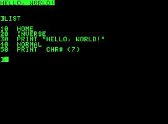
Digger
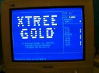
Digger is a computer game similar to the arcade games Mr. Do! and Dig Dug. The player has to collect
diamonds and gold bags while avoiding or shooting enemy Nobbins and Hobbins.
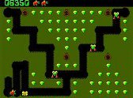
Digger was one of my favorite games as a young kid. I repetitively played the game and
had all the levels memorized. One day, we got a new file visualization program, called XTree Gold.
Immediately, I tried to figure out how to run the game. I stumbled across a file that had patterns of letters
that looked just like the levels I had memorized. After studying the patterns of letters, I was sure the
letters represented those levels (where D was for Diamond and G was for Gold bag, etc). I decided to try modifying
the difficult levels, so that the far away, difficult to get Diamonds were closer and easier to get.
To my amazement, when I finally found how to launch the exe file, that's exactly what those patterns of letters were,
the game's level files. I was thrilled, my first mod worked!
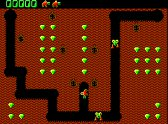